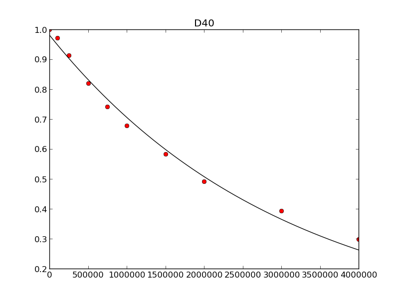
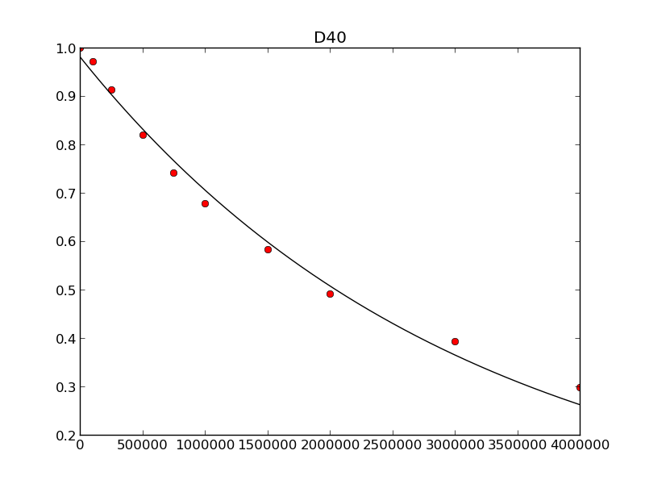

Relaxation trajectory analysis example¶
Introduction¶
This example is taken from Listing S12 - S15 in the 2013 JBNMR nmrglue paper. In this example a series of 3D NMRPipe files containing relaxation trajectories for a solid state NMR experment and analyzed.
Instructions¶
Execute python extract_traj.py to extract the relaxation trajectories from the data set. ‘XXX.dat’ files are created for the peaks defined in the boxes.in file. The spectra.in file defines which spectra the trajectories will be extracted from.
Execute python plot_boxes.py to create plots showing the peak and integration limits for all peaks defined in boxes.in. peak_XXX_spectrum_X.png files are created for all peaks and spectra. A example plot is provided as Figure 7 of the paper, which corresponds to peak_D40_spectrum_0.png
Execute python fit_exp.py to fit all relaxation trajectories. The fitting results are provided in the fits.txt file. The relaxation_times.in file defines the relaxation times for each spectra.
Execute python plot_trajectories to create plots of all experimental and fit relaxation tranjectories. This script creates a series of XXX_plot.png files. An example plot is provided as Figure 8 of the paper, which corresponds to D40_plot.png.
The data used in this example is available for download part1, part2, part3, part4.
Listing S12
import nmrglue as ng
import numpy as np
# read the integration limits and list of spectra
peak_list = np.recfromtxt("boxes.in", names=True)
spectra_list = np.recfromtxt("spectra.in")
# create an array to hold the trajectories
trajectories = np.empty((peak_list.size, spectra_list.size), dtype='float')
# loop over the spectra
for sn, spectra in enumerate(spectra_list):
# read in the spectra data
print "Extracting peak intensities from:", spectra
dic, data = ng.pipe.read(spectra)
# loop over the integration limits
for i, (name, x0, y0, x1, y1) in enumerate(peak_list):
if x0 > x1:
x0, x1 = x1, x0
if y0 > y1:
y0, y1 = y1, y0
# integrate the region and save in trajectories array
trajectories[i][sn] = data[y0:y1 + 1, x0:x1 + 1].sum()
# write out the trajectories for each peak
for itraj, peak_traj in enumerate(trajectories):
peak_traj /= peak_traj.max() # normalize the peak's trajectory
fname = peak_list.peak_label[itraj] + '.dat'
f = open(fname, 'w')
for v in peak_traj:
f.write(str(v) + '\n')
f.close()
Listing S13
import numpy as np
import nmrglue as ng
import matplotlib.pyplot as plt
import matplotlib.cm
# plot parameters
xpad = 5 # padding around peak box on x-axis
ypad = 5 # padding around peak box on y-axis
cmap = matplotlib.cm.Blues_r # contour map (colors to use for contours)
# contour levels
cl = 30000 * 1.20 ** np.arange(20)
# read in the box limits and list of spectra
peak_list = np.recfromtxt("boxes.in", names=True)
spectra_list = np.recfromtxt("spectra.in")
# loop over the spectra
for spec_number, spectra in enumerate(spectra_list):
# read in the spectral data
dic, data = ng.pipe.read(spectra)
# loop over the peaks
for peak, x0, y0, x1, y1 in peak_list:
if x0 > x1:
x0, x1 = x1, x0
if y0 > y1:
y0, y1 = y1, y0
# slice the data around the peak
slice = data[y0 - ypad:y1 + 1 + ypad, x0 - xpad:x1 + 1 + xpad]
# create the figure
fig = plt.figure()
ax = fig.add_subplot(111)
# plot the contours
print "Plotting:", peak, spec_number
extent = (x0 - xpad + 1, x1 + xpad - 1, y0 - ypad + 1, y1 + ypad - 1)
ax.contour(slice, cl, cmap=cmap, extent=extent)
# draw a box around the peak
ax.plot([x0, x1, x1, x0, x0], [y0, y0, y1, y1, y0], 'k--')
# draw lighter boxes at +/- 1 point
ax.plot([x0 - 1, x1 + 1, x1 + 1, x0 - 1, x0 - 1],
[y0 - 1, y0 - 1, y1 + 1, y1 + 1, y0 - 1], 'k--', alpha=0.35)
ax.plot([x0 + 1, x1 - 1, x1 - 1, x0 + 1, x0 + 1],
[y0 + 1, y0 + 1, y1 - 1, y1 - 1, y0 + 1], 'k--', alpha=0.35)
# set the title, save the figure
ax.set_title('Peak: %s Spectrum: %i'%(peak, spec_number))
fig.savefig('peak_%s_spectrum_%i'%(peak, spec_number))
del(fig)
Listing S14
import glob
import numpy as np
from nmrglue.analysis.leastsqbound import leastsqbound
# exponential function to fit data to.
def fit_func(p, x):
A, R2 = p
return A * np.exp(-1.0 * np.array(x) * R2 / 1.0e6)
# residuals between fit and experimental data.
def residuals(p, y, x):
err = y - fit_func(p, x)
return err
# prepare fitting parameters
relaxation_times = np.loadtxt("relaxation_times.in")
x0 = [1.0, 0.10] # initial fitting parameter
bounds = [(0.98, 1.02), (None, None)] # fitting constraints
# create an output file to record the fitting results
output = open('fits.txt', 'w')
output.write("#Peak\tA\t\tR2\t\tier\n")
# loop over the trajecory files
for filename in glob.glob('*.dat'):
peak = filename[:3]
print "Fitting Peak:", peak
# fit the trajectory using contrainted least squares optimization
trajectory = np.loadtxt(filename)
x, ier = leastsqbound(residuals, x0, bounds=bounds,
args=(trajectory, relaxation_times))
# write fitting results to output file
output.write('%s\t%.6f\t%.6f\t%i\n' % (peak, x[0], x[1], ier))
output.close() # close the output file
Listing S15
import numpy as np
import matplotlib.pyplot as plt
# exponential function used to fit the data
def fit_func(p,x):
A, R2 = p
return A * np.exp(-1.0 * np.array(x) * R2 / 1.0e6)
fitting_results = np.recfromtxt('fits.txt')
experimental_relaxation_times = np.loadtxt("relaxation_times.in")
simulated_relaxation_times = np.linspace(0,4000000,2000)
# loop over the fitting results
for peak, A, R2, ier in fitting_results:
print "Plotting:", peak
# load the experimental and simulated relaxation trajectories
experimental_trajectory = np.loadtxt(peak + '.dat')
simulated_trajectory = fit_func((A, R2), simulated_relaxation_times)
# create the figure
fig = plt.figure()
ax = fig.add_subplot(111)
ax.plot(experimental_relaxation_times, experimental_trajectory, 'or')
ax.plot(simulated_relaxation_times, simulated_trajectory, '-k')
ax.set_title(peak)
fig.savefig(peak+"_plot.png")
Example input files
data/Ytau_100.fid/test.ft2
data/Ytau_100000.fid/test.ft2
data/Ytau_250000.fid/test.ft2
data/Ytau_500000.fid/test.ft2
data/Ytau_750000.fid/test.ft2
data/Ytau_1000000.fid/test.ft2
data/Ytau_1500000.fid/test.ft2
data/Ytau_2000000.fid/test.ft2
data/Ytau_3000000.fid/test.ft2
data/Ytau_4000000.fid/test.ft2
[boxes.in]
#peak_label X0 Y0 X0 Y1
A20 4068 938 4079 913
A24 3992 1013 4000 997
A26 4065 962 4075 940
A34 4009 985 4018 958
A48 4028 1034 4036 1010
C28 4035 1115 4044 1092
D36 3994 987 4003 973
D40 4076 802 4085 774
D46 4155 899 4163 883
D47 4053 967 4062 941
E15 4162 1022 4170 996
E19 4176 902 4185 875
E27 4036 1084 4044 1054
E42 4136 1055 4142 1026
E56 4107 821 4115 794
F30 4013 1060 4023 1031
F52 4097 828 4105 799
G09 4054 1249 4063 1220
G14 4068 1331 4077 1304
G38 4098 1254 4106 1227
G41 4091 1283 4099 1259
I06 4087 903 4096 884
# time in us
100
100000
250000
500000
750000
1000000
1500000
2000000
3000000
4000000
Example output
[fits.txt]
#Peak A R2 ier
F30 0.981006 0.259152 1
D40 0.980906 0.328635 1
G14 0.994899 0.108697 1
A48 0.984907 0.125793 1
E15 0.996023 0.088139 1
D47 0.993891 0.101194 1
G38 1.005751 0.127826 1
F52 1.014378 0.063087 1
G09 0.993838 0.097431 1
A34 1.002384 0.152056 1
I06 0.997428 0.060497 1
E56 0.987760 0.157588 1
D36 0.985922 0.153331 1
A20 0.999985 0.102821 1
E27 0.993052 0.298782 1
D46 0.980000 0.074505 1
C28 0.980000 0.680741 1
E42 0.996588 0.210449 1
A26 0.989291 0.258348 1
E19 0.992583 0.165457 1
G41 0.980000 0.528399 1
A24 0.992186 0.417901 1
 
